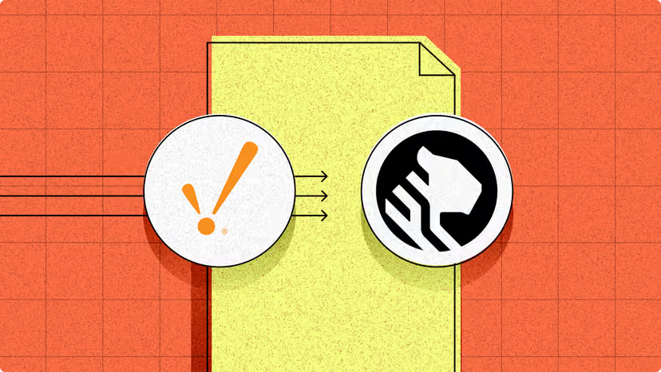
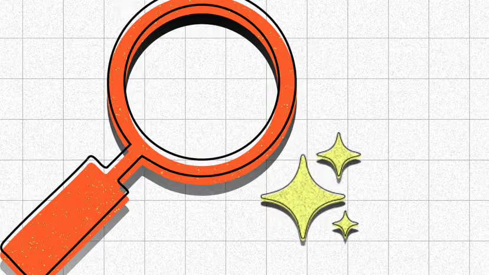
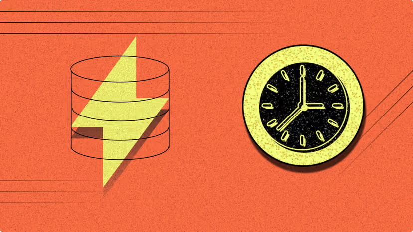
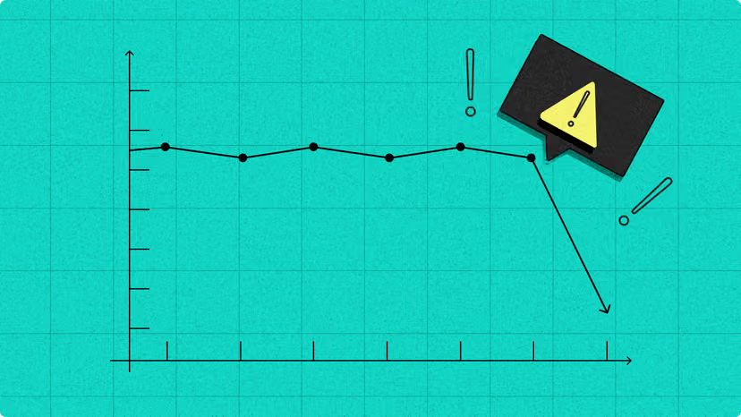
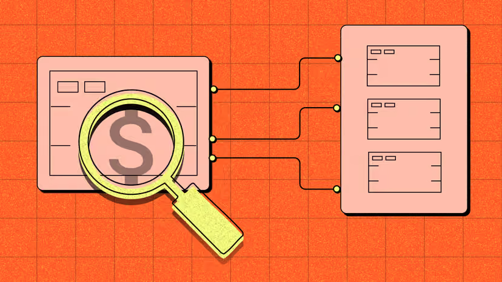
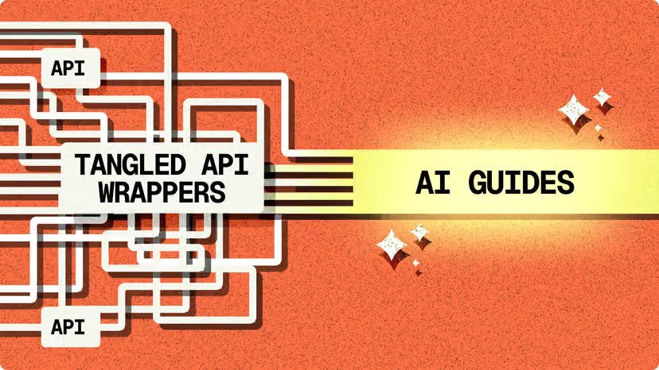
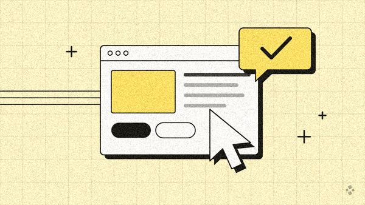
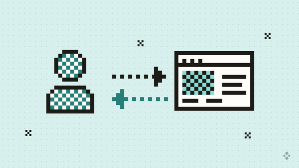
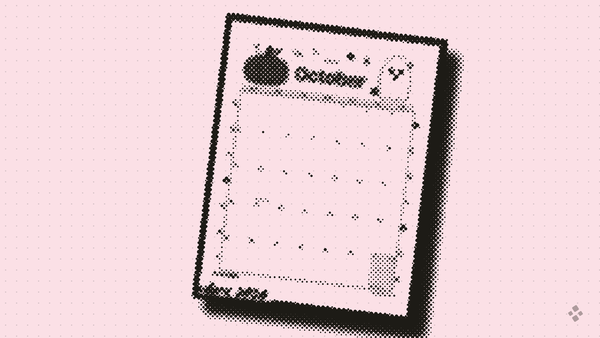
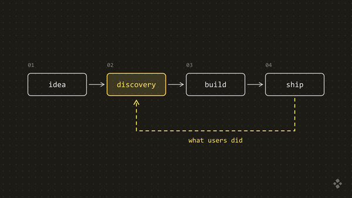

Thumbnail styles
The 35 blog thumbnails the owner shared, sorted into ten styles by how they look and how they are made. Each style says what it is, what it communicates, and whether we can make it here: with code alone, with code plus a photo or icon from outside, or only with an illustrator or an image-generation tool.
Four styles have a small demonstration made here on our own palette (the Printables tints and our mark), with the time it took. Internal reference only; the references belong to their owner.
Summary
| Style | Refs | Can we make it? | Quality by code alone |
|---|---|---|---|
| Flat vector with hard shadows on a grained grid | 10 | Code alone | high |
| Pixel-art icons and panels | 5 | Code alone | high |
| Dithered and halftone objects on a flat color | 5 | Code plus a source image | low (for code alone; high once a good photo is supplied) |
| Icon sequences on a grained grid | 3 | Code plus a source image | high (with an open icon set) |
| Typographic covers on dark | 3 | Code plus a source image | medium |
| Dark line diagrams with one accent | 3 | Code alone | high |
| Dark glow diagrams | 3 | Code alone | medium |
| Light grid diagram | 1 | Code alone | high |
| Particle field render | 1 | Code alone | medium |
| Character drawing on a grained grid | 1 | External image tool | low |
| Total | 35 | ||
Code alone drawn and rendered here, no outside input. Code plus a source image needs a photo or icon from outside, code does the rest. External image tool needs an illustrator or an image-generation tool, then code finishes it.
Flat vector with hard shadows on a grained grid
10 references
- ref-10

ref-17
ref-18 ref-19
ref-19- ref-20

ref-21
ref-22
ref-23
ref-29- ref-30
ref-18 and ref-19 are the same image.
The style
A saturated flat color (red-orange, acid yellow, teal, violet, near-white) under a fine square grid or a dot grid, with film-like grain over everything. One to three simple objects (gears, a magnifier, a database drum, a line chart, a chat window, a box robot) drawn as flat shapes with a thin black outline and a solid black shadow offset down and to the right, so they look like paper cut-outs lifted off the page. A few thin lines run in from the edge to suggest flow. Type is rare: a short label on a pale box in a bold mono face. The brand mark appears as an object itself (a white disc on the drum, or a logo pair for an integration) rather than in a corner.
What it says and when it fits
Friendly, concrete, a little playful. It says "here is the idea in one picture" without pretending to be data. It suits how-to pieces, concepts, announcements and anything where one everyday object can stand for the topic: a magnifier for research, a chat box for interviews, a chart for metrics.
Code alone
Every object here is a handful of rectangles, circles and paths. The shadow is the same shape drawn again in black and shifted; the grid is a loop of lines; the grain is random noise added to the pixels. All of it is SVG written by hand and rendered with Python. Demonstration (a) proves it on our yellow tint. The only weak spot is an organic object with character (see the elephant in its own group).
What I would make for us
Our tint as the field (the article's tint from the rotation), a fine ink grid at 10% and light grain, objects in card white and highlight A with ink outlines and a solid ink shadow, our mark small in the bottom-right corner. Objects from our world: a browser window, a cursor, a sticky note, a roadmap card, a research magnifier, a speech bubble.
Quality by code alone: high

Pixel-art icons and panels
5 references
The style
Icons built from square pixels on a visible grid: a padlock, a factory, a key, database drums, a RAM stick spilling squares into a disk. Outlines are one pixel thick and fills use a checker dither for mid-tones. Backgrounds are near-black or a flat red-orange; two of them put a dark rounded panel on the color, like a game screen. Type, when present, is a pixel font in capitals. One accent color (acid yellow) at most. No brand mark.
What it says and when it fits
Technical, nostalgic, systematic. It reads as "this is about how the machine works". It suits short, tactical pieces, tool and calculator pages, checklists and anything process-like where an arrow between two icons tells the story.
Code alone
Pixel art is a grid of squares, which is the easiest thing in the world to write as code: each icon is a small text map of filled and empty cells. Dithered fills are a checker pattern. Demonstration (b) is a person, a product window and two arrows (a feedback loop) on our teal tint.
What I would make for us
On our tint with the Printables dot grid (not on black), ink outlines, a checker dither in highlight A or B for the one area that matters, our mark in the corner. A small library of pixel icons for our recurring subjects (user, window, note, chart, calendar, book) would make each new thumbnail a few minutes of layout.
Quality by code alone: high

Dithered and halftone objects on a flat color
5 references
The style
A real photograph or 3D render (a robot hand and a database, a power substation, a laptop with a clock, server stacks) reduced to a pattern of dots or square pixels, in a single ink, on one flat color: red-orange, acid yellow, blue. A loose dot grid or scattered pixel crosses sit behind. Ref-09 is the same treatment applied to a vector icon (a cloud over databases). Type is rare and plain. The brand mark is big in the corner on ref-09, absent on the rest.
What it says and when it fits
Real-world weight with a printed, newsy feel. The photo says "this exists", the dots say "this is our publication". It suits industry pieces, case studies, opinion, event recaps and anything about a physical place, product or person.
Code plus a source image
The dot treatment itself is pure code: a dot screen, Floyd-Steinberg error diffusion or an ordered Bayer pattern are each a few lines in Pillow, followed by recoloring to two colors and placing on the tint. What code cannot make is the subject. It needs a photograph with real light and shadow. Sources: the owner's own photos first (desk, workshops, sketches, devices); open-license photo sites such as Unsplash and Pexels (free to use, attribution appreciated, no reselling the photo alone); for ref-09 style, an open icon set. Demonstration (d) runs the pipeline on a screenshot of the owner's Printables site: the method works, but a flat screenshot has little tone, so it reads as an outline; a photo with shadows gives the rich result in ref-01 and ref-06.
What I would make for us
A photo cut out from its background, reduced to ink dots, on the article's tint with a faint dot grid, our mark in the corner. Best with the owner's own photos, which also builds the authority the site is for.
Quality by code alone: low (for code alone; high once a good photo is supplied)

Icon sequences on a grained grid
3 references


ref-25 and ref-28 are the same image.
The style
Four or five line icons from one consistent set (a table with a bolt, a branching diagram, a lightbulb, a document with a magnifier) arranged as a sequence: on white discs riding a conveyor belt, or in a numbered ring around a soft orange glow. Grained orange or yellow field with a grid or a few edge lines. Numbers in a mono face. No brand mark.
What it says and when it fits
Order and completeness: "there are five steps" or "these four features". It suits listicles, frameworks, step-by-step guides and product round-ups, where the count is the hook.
Code plus a source image
The layout, discs, conveyor, glow, numbers and grain are code alone. The icons should come from an open set so they share one stroke weight and look professional: Lucide (ISC license), Phosphor (MIT), Tabler (MIT). All three allow use without attribution. Drawing twenty good icons by hand is possible but slower and less consistent than taking them from a set.
What I would make for us
Icons from one open set in ink at our 2.5-unit stroke, on card-white discs with a solid ink shadow, numbered in Inter, on the article's tint with grain. One highlight-A disc marks the step the article is about.
Quality by code alone: high (with an open icon set)
Typographic covers on dark
3 references


The style
A near-black field (dot grid on one) with a title in a heavy mono or pixel face, a short subtitle, sometimes a small colored kicker above, and one image: a blue fingerprint drawn in fine lines, a dithered factory photo in a framed panel, or a full-bleed dithered event photo. Accent in acid yellow or blue. The brand mark sits large in yellow in the corner of the event cover.
What it says and when it fits
Headline-first. The words do the work and the image is supporting texture. It suits series, reports, event recaps, "what we heard" pieces and anything where the title is the hook and must be readable in a feed.
Code plus a source image
The type is easy and exact with our self-hosted fonts. Two of the three use a dithered photograph (see the dithered group for sources and method) and the fingerprint needs a fingerprint image or vector from outside. With a code-drawn object instead (a diagram, a pixel icon), the cover is code alone. Note that a title inside the image doubles the headline on the page and is lost in search results, so this suits social cards more than on-site thumbnails.
What I would make for us
If used, on a tint rather than black, the title in Inter Display Bold, one object from the flat-vector or pixel library, our mark in the corner. Best kept for social images and series covers.
Quality by code alone: medium
Dark line diagrams with one accent
3 references


The style
A near-black field, sometimes with a faint dot grid, carrying a real explainer diagram: a bar chart with a lookback window, two ranked lists swapped by a search method, a numbered pipeline of boxes. Thin white or gray lines, small mono labels, rounded boxes, and one accent color (red, blue, lime, teal) for the part that matters. Partner logos inside the diagram on ref-35, no brand mark otherwise.
What it says and when it fits
Precise and technical. It promises a mechanism will be explained. It suits deep explainers and comparisons, where the thumbnail is literally the article's key figure.
Code alone
This is boxes, lines, arrows and text, exactly what our explainer generator already draws. Demonstration (c) is a four-stage product flow with a feedback loop in one accent, on our ink as the background. Text renders with system mono fonts, so the export should stick to fonts that are installed or self-hosted.
What I would make for us
Ink #1D1B16 as the field with a faint white dot grid, white lines and labels, one highlight A from the article's tint as the accent. It breaks our rule of one pastel tint per image, so it suits a named series (for example data or metrics pieces) rather than the main rotation.
Quality by code alone: high


Dark glow diagrams
3 references


The style
Pure black with large soft shapes in dark gray (a cloud, a half-circle) lit from within, and objects drawn in glossy white lines that fade at their ends: a cloud of database drums with one lit in yellow, a tangle of cards sorted into a grid, a sync loop to a cloud. One accent at most. No type, no mark.
What it says and when it fits
Premium, product-launch, infrastructure. It feels like a keynote slide. It suits architecture, migration and scale topics; it is cooler and more corporate than the rest of the set.
Code alone
Soft shapes are SVG gradients and blur filters, which our renderer supports; fading line ends are linear gradients on strokes. It can be made here, but getting the glow and depth to look expensive rather than flat takes tuning per image, so the quality is less predictable than the flat styles.
What I would make for us
Probably not for us: black breaks the tint system and the mood is more enterprise than editorial. If ever used, the article's highlight A as the single lit element.
Quality by code alone: medium
Light grid diagram
1 reference

The style
Near-white with a faint square grid and fine speckle, a thin rounded inner frame, and an abstract diagram: blocks of black stripes (rows of data) with orange lines fading in from the left and two arrows splitting one block into two. One accent color. No type, no mark.
What it says and when it fits
Calm, precise, quietly technical. It explains a structural idea (splitting, merging, partitioning) without words. It suits concept explainers and pairs naturally with figures inside the article.
Code alone
Lines, rectangles, a gradient on a stroke, a grid and speckle noise. It is the closest of all the references to the explainer illustrations we already make on the Printables tints.
What I would make for us
Exactly our explainer style: the article's tint with the dot grid, ink lines, highlight A or B as the accent, our mark in the corner. A thumbnail can be a simplified version of the article's key figure.
Quality by code alone: high
Particle field render
1 reference

The style
A black panel inside a thin rounded frame. Thousands of tiny yellow dots stream from both sides into a pinch point, glowing where they are densest, with a pixel table icon at the waist, a small mono label on a leader line, and a large pixel-font number (2.8s) to the right.
What it says and when it fits
Speed, volume, a bottleneck. One number is the headline. It suits performance stories and before-and-after results.
Code alone
A particle field is a loop that scatters dots along a curve with some jitter, plus a blur for the glow; the icon is pixel art and the number is type. All doable in Python. The organic look of the streams needs a few rounds of tuning to avoid looking mechanical.
What I would make for us
Ink dots streaming on the article's tint (no glow), a pixel icon at the pinch, one number in Inter Display. Occasional use for a piece built around one result.
Quality by code alone: medium
Character drawing on a grained grid
1 reference

The style
The flat-vector look (grained orange field, square grid, a line chart with dots) but the subject is an elephant with real character: hand-drawn contour lines for the legs, ear and trunk, a pale yellow fill and a deep red shadow, standing on the chart like a pull toy. No type, no mark.
What it says and when it fits
Warmth and personality. A mascot or a metaphor animal makes a piece memorable. It suits flagship articles, annual pieces and anything that should be shared.
External image tool
The background, chart, grain and shadow are code. The elephant is not: an animal with believable proportions and expressive line work, written by hand as SVG, comes out stiff and crude. It needs a human illustrator or an image-generation tool, given a prompt that describes this style (flat shape, single outline, pale fill, solid offset shadow, no gradients) and our palette. The result would then be traced or cleaned, recolored to the tint and highlights, given the grain and grid, and marked, all by code.
What I would make for us
A small set of recurring characters drawn once by an illustrator (for example a researcher, a product manager, a user), reused across flagship pieces on their article's tint with code adding the grid, grain, shadow and mark.
Quality by code alone: low
Recommendation
Adopt three styles for our thumbnails, all made here reliably on the article's tint, so a new piece needs no outside help:
- Flat vector with hard shadows on a grained grid, as the default. Warm, editorial, readable at small sizes, and every object in our subject area (a window, a cursor, a note, a chart, a magnifier) is simple geometry. Demonstration (a).
- The light grid diagram for explainer-led articles. It is our existing figure style, so the thumbnail can be a simplified version of the article's key figure.
- Pixel icons for tools, calculators, templates and short tactical pieces. A small icon library makes each one a few minutes of layout and gives that section of the site its own look. Demonstration (b).
Icon sequences fit inside the first style whenever an open icon set (Lucide, Phosphor or Tabler) is used for the icons.
Reserve for occasional pieces with outside help:
- Dithered photos for case studies, interviews and event pieces, using the owner's own photos first. The dot treatment is code; the photo is the input.
- Character drawings for flagship articles, from an illustrator or an image-generation tool, then finished by code with our grid, grain, shadow and mark.
Leave out the dark styles (dark diagrams, glow diagrams, dark covers) from the main rotation: they can be made here, but black breaks our one-tint-per-article rule. Keep them in mind for a named series or social images.